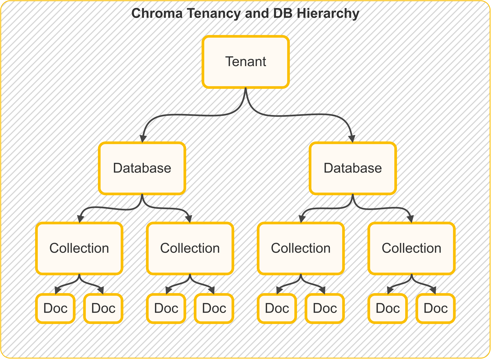

Concepts¶
This page has two tracks:
For General Users¶
Tenancy and DB Hierarchies¶
The following picture illustrates the tenancy and DB hierarchy in Chroma:

Storage
In Chroma single-node, all data about tenancy, databases, collections and documents is stored in a single SQLite database.
Tenants¶
A tenant is a logical grouping for a set of databases. A tenant is designed to model a single organization or user. A tenant can have multiple databases.
Databases¶
A database is a logical grouping for a set of collections. A database is designed to model a single application or project. A database can have multiple collections.
Collections¶
Collections are the grouping mechanism for embeddings, documents, and metadata.
Documents¶
Chunks of text
Documents in ChromaDB lingo are chunks of text that fit within the embedding model's context window. Unlike other frameworks that use the term "document" to mean a file, ChromaDB uses the term "document" to mean a chunk of text.
Documents are raw chunks of text that are associated with an embedding. Documents are stored in the database and can be queried.
Metadata¶
Metadata is a dictionary of key-value pairs associated with an embedding.
Metadata values can be:
- strings
- integers
- floats (
float32) - booleans
- arrays of strings, integers, floats, or booleans (
Chroma >= 1.5.0)
Array metadata constraints:
- all elements must be the same type
- empty arrays are not allowed
- nested arrays are not supported
See Array Metadata for examples with $contains / $not_contains.
Runnable filter examples:
Embedding Function¶
Embedding functions (embedding models) expose a consistent interface for generating vectors from documents or queries.
See Chroma's official embedding integrations.
Embeddings¶
An embedding is a vector representation of a document, typically a list of float32 values.
Distance Function¶
Distance functions define similarity between vectors:
- Cosine: common for semantic text similarity
- Euclidean (
l2): geometric distance - Inner Product (
ip): common in recommendation-like scenarios
How Data Flows Through Chroma Cloud (Distributed Chroma)¶
The animated flows below model Chroma Cloud / distributed Chroma, where gateway, WAL, compaction, and query execution are separate services. In local or single-node deployments, the same logical stages still apply but are often co-located in one process.
Write Path (Add / Update / Upsert / Delete)¶
In distributed Chroma, writes are acknowledged after WAL durability. Compaction materializes new index versions in the background.
Query Path (Get / Query / Search)¶
In distributed Chroma, strongly consistent reads combine indexed state with recent WAL state.
The detailed query pipeline is described in Advanced Queries.
Implementation-level (code-backed) local-vs-distributed query diagrams are in the For Power Users section below.
For Power Users¶
This section is a code-oriented map of distributed Chroma, based on the Rust workspace (rust/) and the distributed architecture docs.
Execution Paths (Code-Backed)¶
These diagrams are traced from the Rust frontend/segment/log implementation (rust/frontend, rust/segment, rust/log).
Interactive Local Query Path (Single-Node SQLite + HNSW)¶
Click any stage to inspect what happens in the local executor path. First read triggers backfill/purge into local metadata + HNSW segments.
Selected stage
Validation + Segment Resolve
Service: FrontendServer + ServiceBasedFrontend
Request validation/auth happens in frontend, then collection + segment ids are resolved before plan execution.
Distributed Frontend Dispatch Path (Cloud)¶
In distributed mode, frontend routes Knn/Get/Search plans to query workers over gRPC. Worker-side execution uses distributed segment/index types (HnswDistributed or Spann with blockfile segments), not frontend-local SQLite + HNSW providers.
Code references for the two paths:
- Local segment types on collection create:
Executor::LocalcreatesHnswLocalPersisted+Sqlite - Local query execution:
LocalExecutorusesSqliteMetadataReader+LocalSegmentManager::get_hnsw_reader - Distributed query execution:
DistributedExecutordispatchesknn/get/searchvia gRPC query clients
Distributed Architecture (Main Services)¶
- Gateway / frontend API service:
rust/frontend(server) - Query executor service:
rust/worker(query entrypoint, query server) - Compaction service:
rust/worker(compaction orchestrator) - Write-ahead log:
rust/wal3(design README) - Garbage collector service:
rust/garbage_collector(orchestrator)
See also the official architecture doc: Distributed Chroma Architecture.
Main Primitives and Index Families¶
At the segment/type level (rust/types/src/segment.rs), distributed Chroma uses segment types such as:
BlockfileMetadata,BlockfileRecordHnswDistributedSpann,QuantizedSpannSqlite
And at the index crate level (rust/index/src), major families include:
- Vector ANN:
hnsw,spann,quantized_spann - Full text:
fulltext - Metadata:
metadata - Sparse retrieval support:
sparse
SPANN in Distributed Chroma¶
Core implementation: rust/index/src/spann/types.rs.
Operationally, SPANN combines:
- a head/center ANN structure (HNSW over centers)
- posting lists keyed by center/head id (blockfile-backed)
- a versions map (
doc_offset_id -> version) to filter stale entries - a persisted
max_head_idfor deterministic head allocation across compactions
The write-side behavior includes:
- add/update/delete on posting lists and versions map
- splitting oversized posting lists into new heads
- reassigning points to nearby heads after split/merge operations
- optional garbage collection policies:
- posting-list random-sample cleanup
- HNSW full rebuild or delete-percentage-triggered rebuild
Blockfile Format and Update Model¶
Core implementation: rust/blockstore/src/arrow.
Production blockfiles are Arrow-backed and use:
- immutable blocks for persisted data
- an in-memory sparse index mapping key ranges to block ids
- writer-side deltas for mutation batching (
set/delete) - copy-on-write for updates via
fork(...)
Update lifecycle:
- Writer mutates deltas and may split blocks when over target block size.
- Sparse index is updated to point at new block ids.
commit()converts deltas into immutable blocks and prepares a flusher.flush()persists blocks, then atomically persists root metadata/sparse index.
Relevant code:
Compaction and Registration¶
Compaction in distributed mode (rust/worker/src/execution/orchestration/compact.rs) follows an explicit staged flow:
- fetch and materialize logs
- apply to segment writers (record/metadata/vector)
- commit and flush segment artifacts
- register new segment metadata and offsets in sysdb/log metadata
This is the core bridge from WAL durability to read-optimized segment versions.
Garbage Collection (Index Files + WAL)¶
Two GC tracks run in the Rust implementation:
- Segment/index artifact GC in
rust/garbage_collector: - construct collection version graph (including fork dependencies)
- compute versions to delete using cutoff + min-versions retention
- compute unreferenced files and clean up (dry-run / rename / delete)
- WAL GC in
wal3: - three-phase GC dance (compute garbage, manifest synchronization, delete)
- cursor-driven safety so required log ranges remain pinned
Relevant code: